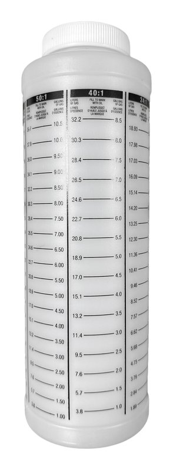
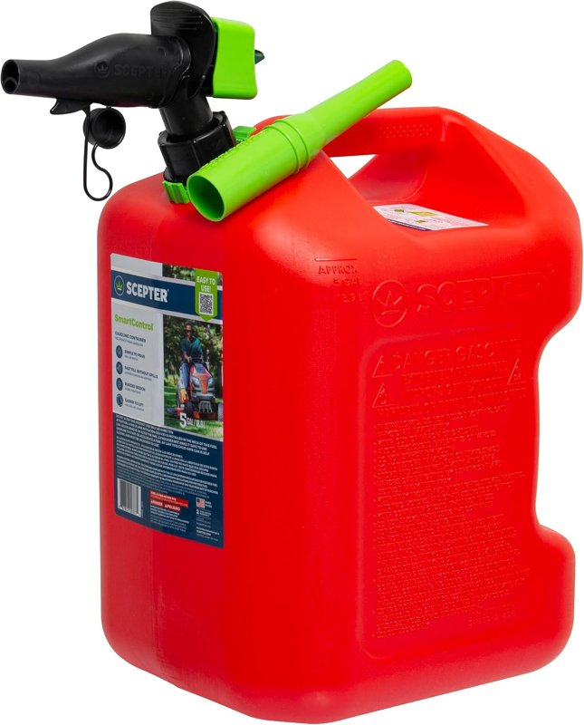

Fully synthetic 2T oil
Motorex Cross Power 2T is what the JetSurf factory recommends — fully synthetic, low smoke. Any premium fully synthetic 2T oil works; don't use cheap TC-W3 outboard oil.
Motorex Cross Power 2T →Every gas JetSurf runs a two-stroke engine, which means the oil that keeps it alive travels in the fuel — there's no separate oil reservoir. Get the mix right and the engine runs strong for years. Get it wrong and you're looking at a seized motor.
50 parts gasoline to 1 part two-stroke oil. In practical terms:
| Gasoline | 2T oil (US) | 2T oil (metric) |
|---|---|---|
| 1 gallon | 2.6 oz | 76 ml |
| 2 gallons | 5.1 oz | 151 ml |
| 2.5 gallons | 6.4 oz | 189 ml |
| 5 gallons | 12.8 oz | 379 ml |
| 5 liters | 3.4 oz | 100 ml |
| 10 liters | 6.8 oz | 200 ml |
Calculated at exactly 50:1. The 50-1 column on a ratio bottle lands on the same numbers.
Motorex Cross Power 2T is what the JetSurf factory recommends — fully synthetic, low smoke. Any premium fully synthetic 2T oil works; don't use cheap TC-W3 outboard oil.
Motorex Cross Power 2T →
A quart bottle with 50:1 graduations takes the math out of it — fill oil to the line that matches your gas amount, pour, done. Far more accurate than eyeballing.
Scepter mixing bottle →
A 5-gallon can with a controlled spout keeps splash out of the equation when filling the board. Keep one can for mix only — label it so it never gets confused with straight gas.
Scepter 5 gal gas can →Use the highest octane at the pump — 93 in most of the US. Ethanol-free is best if you can find it; ethanol attracts water and degrades fuel lines over time.
Find ethanol-free stations →No. Four-stroke car oil doesn't burn cleanly in a two-stroke and will foul the engine. Marine TC-W3 outboard oil is formulated for low-RPM water-cooled outboards, not a high-revving JetSurf engine. Stick with a fully synthetic 2T motorcycle/motocross oil.
A slightly rich mix (like 40:1) mostly costs you smoke, spark plug fouling, and a little power. Annoying, but not fatal. Too lean (too little oil) is the dangerous direction — that's what seizes engines. If you're ever unsure, err on the side of more oil, not less.
Don't. The high-compression JetSurf engine is designed for premium fuel. Low octane can cause knock/detonation, which damages the piston over time. The dollar or two extra per gallon is the cheapest insurance you'll ever buy.
The tank holds about 2.8 liters (0.75 gal), good for roughly 35–50 minutes of hard riding. A 5-gallon can of mix covers about 6 tank fills.
The electric models don't use fuel at all — this guide only applies to the gas-powered (Race, Titanium, Cruiser, Adventure DFI) boards.
Always mix and store fuel outdoors, away from ignition sources, and follow your local fuel storage regulations. Working reference — not official JETSURF documentation.
Cleaning and storage through to a full engine rebuild, every guide with a video walkthrough and timestamped steps.